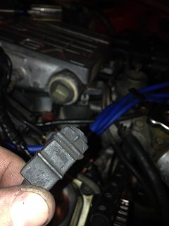
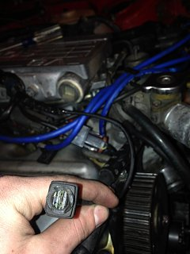
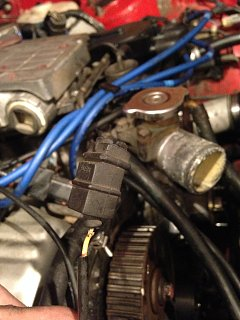
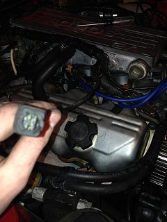
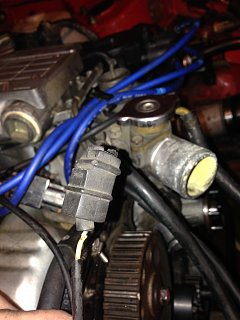

-
I found this wire after i took apart my intake plenum and put it back on. I have no idea where it goes and it appears to be broken off somewhere. i just want to know where it would connect. I have taken out the cruise control, but i really don't think it connected to the CC. (this is on the passenger side wiring harness.) (this is a 1985 n/a)
     -
It attaches to the the FPR temp sensor. Looks like the tab might have broken off inside it. In which case you either need to get another sensor
from the junkyard, or a new FPR. The sensor is not sold separately as a new part.
1234.jpg

84 AE/Shiro #683/Shiro #820/84 Turbo -
You don't necessarily have to replace anything, there's a simple fix I used. I got a short piece of wire that had a similar tab terminal that fit in the plug. I then soldered the other end of the wire to the temp sensor where the terminal had broken off. That way you can just connect the plug on that terminal. This works as long as there's still some surface to solder on and you can pry out the broken tab from the plug. -
thanks guys so much! I'm going to see about repairing it like KAUR said. or ill see if i can find one online or at a junk yard. Would this sensor broken cause any major problems if i started it? is it that important? -
It's not really that important, but probably still good to have. You can drive without it. Fuel temperature doesn't change that much in general. -
dunno about that mine ran like crap when that sender was disconnected.Life's short
Go fast
Have a blast
Leave a good looking corpse -
Aw man that was like one of the first things that broke on me! lol Well the wire ripped right on the end of it On the search too
On the search too

Copyright © 2006–. All rights reserved. Privacy Policy